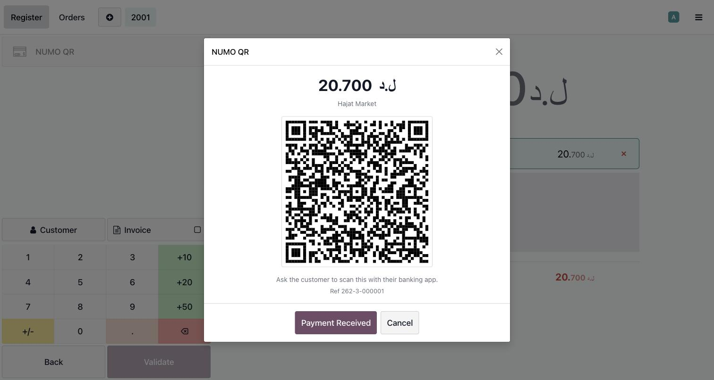
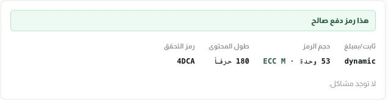

Pick NUMO QR on the payment screen and the till shows a QR code carrying the exact amount. The customer scans it with their own Libyan banking app and pays. The cashier confirms, and the order closes. Your existing bank account is the only thing you need.

The amount, your shop name, and the order reference travel inside the code, so the customer's app fills the amount in for them and you have something to reconcile against later.
NUMO is the Central Bank of Libya's national QR standard — an EMVCo-style Tag-Length-Value format. Codes from this module were checked field by field against an independent Libyan NUMO implementation:

“A valid payment code — no problems.”
Every order produces a fresh dynamic QR carrying its own total, so the customer never types an amount and never types it wrong. The order reference and the register name ride along in the code's additional-data field.
A malformed IBAN or bank code still produces a perfectly scannable QR — it just points at the wrong account, and nobody finds out until a customer has paid someone else. The IBAN, the 3-digit bank code and the category code are checked when you save the payment method, not at the till.
Merchant-presented QR needs no card reader, no SIM, no rental contract. Any screen the customer can see is the payment terminal, so a second register costs nothing to add.
The NUMO details sit on the POS payment method, the same place Odoo keeps every other terminal's configuration. Shops that bank in different places can each point their own register at their own account.
Go to Point of Sale › Configuration › Payment Methods and create a method. Set Integration to Terminal, choose NUMO QR, then fill in the account holder name, IBAN, 3-digit bank code, merchant name and city. Add the method to your register and you are taking payments. There is nothing to install on the customer's side.
The cashier confirms the payment. Merchant-presented NUMO ends in the customer's own banking app, and this module makes no call to any gateway, so the till has no independent proof the money moved. Confirming is a judgement the cashier makes, exactly as it is with a bank transfer today. If your bank offers a merchant API for confirmation, that is a different and larger integration.
You need a Libyan bank account that supports NUMO, and its IBAN and 3-digit institution code. The QR is rendered by your Odoo server, so the register needs its connection at the moment of payment.
NUMO carries amounts in Libyan Dinar. Set your company currency to LYD so the amount is written with the three decimals the standard expects.